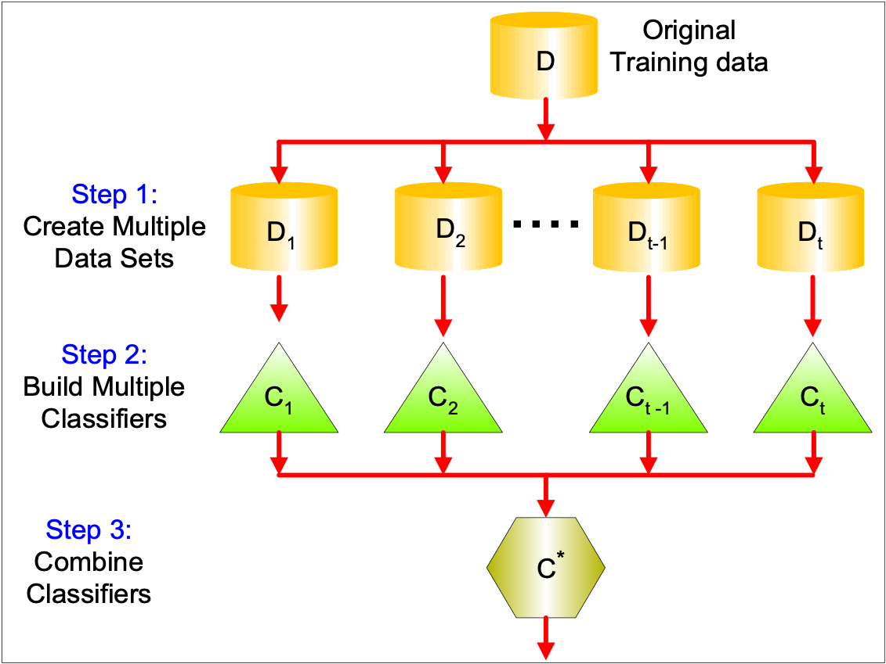
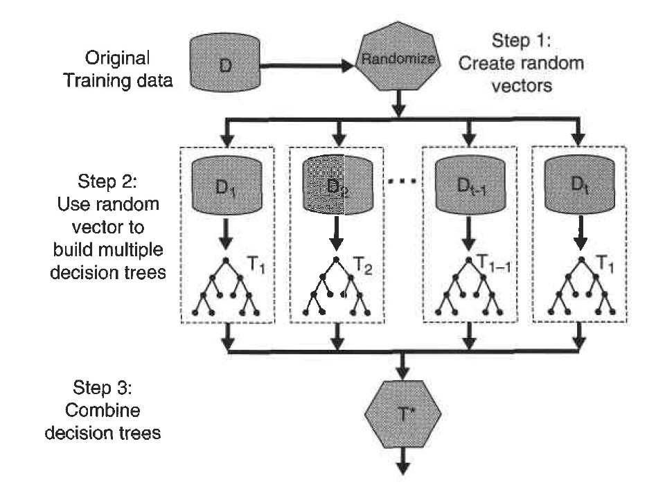

Week 14: Ensemble Methods
Reference
- Pang-Ning Tan,Michael Steinbach, Vipin Kumar, Introduction to Data Mining, 2nd edition Published by Pearson (January 4, 2018) https://www-users.cse.umn.edu/~kumar001/dmbook/index.php
Objectives
Students will
Understand the idea of ensemble methods
Know how to use R to conduct random forest
Ensemble Methods
Construct a set of classifiers from the training data
Predict class label of previously unseen records by aggregating predictions made by multiple classifiers
Genearl Idea
Question: Why does it work?
Suppose there are \(25\) base classifiers
Each classifier has error rate, \(\varepsilon = 0.35\)
Assume classifiers are independent
Probability that the ensemble classifier makes a wrong prediction:
\[\sum_{i=13}^{25} \begin{pmatrix} 25 \\ i \end{pmatrix} \varepsilon^i (1-\varepsilon)^{25-i} = 0.06\]
Methods for Constructing an Ensember Classifier
Manipulating the training set: multiple training sets are created by resampling the original data according to some sampling distribution
- Bagging
- Boosting
Manipulating the input features: a subset of input features is chosen to form each training set e.g. Random Forest
Manipulating the class labels This method can be used when the number of classes is sufficiently large.
Manipulating the learning algorithm
Example of Random Forest

Random Forest in R
We still investigate South African Heart Disease dataset.
160 cases of MI (myocardial infarction) and 302 controls (all male in age range 15-64), from Western Cape, South Africa in early 80s.
Overall prevalence very high in this region: 51%.
Measurements on seven predictors (risk factors).
Goal is to identify relative strengths and directions of risk factors.
This was part of an intervention study aimed at educating the public on healthier diets
# import ElemStatLearn
library(ElemStatLearn)
summary(SAheart) sbp tobacco ldl adiposity
Min. :101.0 Min. : 0.0000 Min. : 0.980 Min. : 6.74
1st Qu.:124.0 1st Qu.: 0.0525 1st Qu.: 3.283 1st Qu.:19.77
Median :134.0 Median : 2.0000 Median : 4.340 Median :26.11
Mean :138.3 Mean : 3.6356 Mean : 4.740 Mean :25.41
3rd Qu.:148.0 3rd Qu.: 5.5000 3rd Qu.: 5.790 3rd Qu.:31.23
Max. :218.0 Max. :31.2000 Max. :15.330 Max. :42.49
famhist typea obesity alcohol age
Absent :270 Min. :13.0 Min. :14.70 Min. : 0.00 Min. :15.00
Present:192 1st Qu.:47.0 1st Qu.:22.98 1st Qu.: 0.51 1st Qu.:31.00
Median :53.0 Median :25.80 Median : 7.51 Median :45.00
Mean :53.1 Mean :26.04 Mean : 17.04 Mean :42.82
3rd Qu.:60.0 3rd Qu.:28.50 3rd Qu.: 23.89 3rd Qu.:55.00
Max. :78.0 Max. :46.58 Max. :147.19 Max. :64.00
chd
Min. :0.0000
1st Qu.:0.0000
Median :0.0000
Mean :0.3463
3rd Qu.:1.0000
Max. :1.0000 pairs(SAheart[,1:7],col= ifelse(SAheart$chd==1,'red','blue'))
Split the data set into training and test.
i <- sample(2, nrow(SAheart), replace=TRUE, prob=c(0.8, 0.2))
SAtrainingData <- SAheart[i==1,]
SAtestData <- SAheart[i==2,]
summary(SAtrainingData) sbp tobacco ldl adiposity famhist
Min. :101 Min. : 0.0000 Min. : 0.980 Min. : 6.74 Absent :222
1st Qu.:124 1st Qu.: 0.0425 1st Qu.: 3.300 1st Qu.:20.23 Present:148
Median :134 Median : 1.7100 Median : 4.325 Median :26.00
Mean :138 Mean : 3.4171 Mean : 4.706 Mean :25.49
3rd Qu.:148 3rd Qu.: 5.1575 3rd Qu.: 5.730 3rd Qu.:31.29
Max. :218 Max. :20.0000 Max. :15.330 Max. :42.49
typea obesity alcohol age
Min. :13.00 Min. :14.70 Min. : 0.000 Min. :15.00
1st Qu.:47.00 1st Qu.:23.09 1st Qu.: 0.510 1st Qu.:31.00
Median :54.00 Median :25.88 Median : 6.615 Median :44.50
Mean :53.45 Mean :26.09 Mean : 16.443 Mean :42.41
3rd Qu.:60.00 3rd Qu.:28.59 3rd Qu.: 23.345 3rd Qu.:55.00
Max. :78.00 Max. :46.58 Max. :147.190 Max. :64.00
chd
Min. :0.0000
1st Qu.:0.0000
Median :0.0000
Mean :0.3486
3rd Qu.:1.0000
Max. :1.0000 summary(SAtestData) sbp tobacco ldl adiposity famhist
Min. :102.0 Min. : 0.000 Min. : 1.590 Min. : 9.28 Absent :48
1st Qu.:124.0 1st Qu.: 0.400 1st Qu.: 3.215 1st Qu.:18.31 Present:44
Median :136.0 Median : 2.900 Median : 4.490 Median :26.53
Mean :139.8 Mean : 4.515 Mean : 4.876 Mean :25.09
3rd Qu.:152.5 3rd Qu.: 6.315 3rd Qu.: 6.060 3rd Qu.:30.36
Max. :208.0 Max. :31.200 Max. :11.890 Max. :41.05
typea obesity alcohol age
Min. :25.00 Min. :18.75 Min. : 0.00 Min. :16.00
1st Qu.:45.75 1st Qu.:22.58 1st Qu.: 0.00 1st Qu.:33.00
Median :52.00 Median :25.66 Median : 8.33 Median :47.50
Mean :51.70 Mean :25.87 Mean : 19.46 Mean :44.45
3rd Qu.:58.00 3rd Qu.:28.27 3rd Qu.: 26.92 3rd Qu.:56.00
Max. :77.00 Max. :40.34 Max. :144.00 Max. :64.00
chd
Min. :0.000
1st Qu.:0.000
Median :0.000
Mean :0.337
3rd Qu.:1.000
Max. :1.000 Fit the training data and predict the training data and calculate the confusion matrix
#Need to include package randomForest
library(randomForest)randomForest 4.7-1.2Type rfNews() to see new features/changes/bug fixes.
Attaching package: 'randomForest'The following object is masked from 'package:ggplot2':
marginmyrf<- randomForest(as.factor(chd)~.,data=SAtrainingData)
predrf<-predict(myrf,SAtrainingData)
confMat<-table(SAtrainingData$chd,predrf)
print(confMat) predrf
0 1
0 241 0
1 0 129#accuracy is
sum(diag(confMat))/sum(confMat)[1] 1#precision is
confMat[2,2]/sum(confMat[,2])[1] 1#recall is
confMat[2,2]/sum(confMat[2,])[1] 1Predict the test data and calculate the confusion matrix
predrf<-predict(myrf,SAtestData)
confMat<-table(SAtestData$chd,predrf)
print(confMat) predrf
0 1
0 45 16
1 14 17#accuracy is
sum(diag(confMat))/sum(confMat)[1] 0.673913#precision is
confMat[2,2]/sum(confMat[,2])[1] 0.5151515#recall is
confMat[2,2]/sum(confMat[2,])[1] 0.5483871In-Calss Exercise: Ensemble Methods
Obtaining the Breat Cancer Wisconsin data set
Split the dataset to training and test datasets
Use random forest to build a classifier on the training dataset
Predict the test dataset and generate a confusion matrix